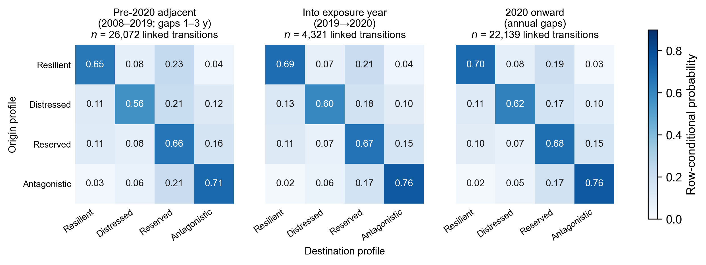
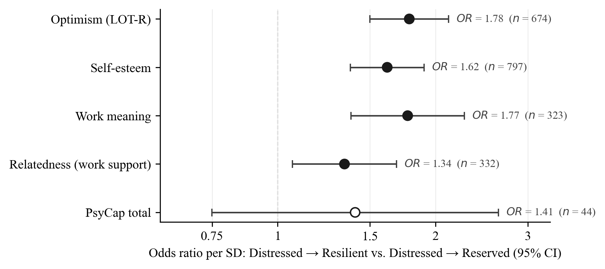
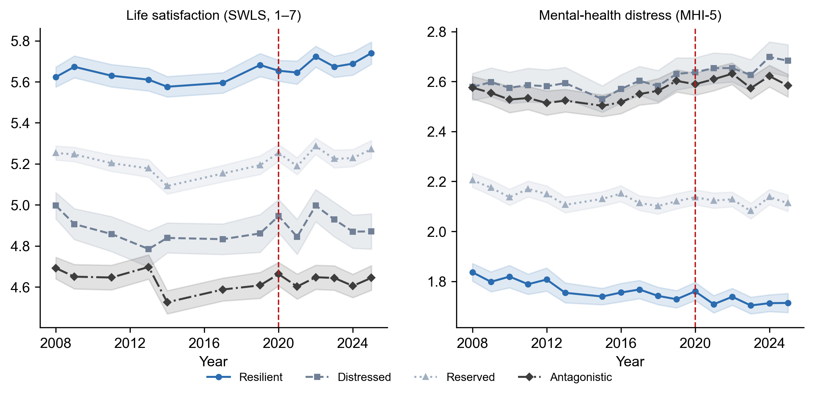

The manuscript’s figures with plain-language reading guides. The study is
observational: the design orders measurement in time and separates within-person change from
stable differences between people, but it does not manipulate anything, so every association
below is read as an association.
0 · What was measured when
How to read it: the personality backbone is annual, which is what
makes short-gap movement between profiles and within-person spirals estimable. The
technology stressors were asked once, in 2020 — during the COVID-19 onset and before
large-language models reached the workplace — so they index appraised replaceability,
machine pacing, digital monitoring, and exhaustion, not generative-AI use. The red arrow is the
five-year lag the stressor tests rely on.
1 · Four profiles, and how people move between them
How to read it, top to bottom: (A) the shape of each profile on
the five traits. Distressed combines high neuroticism with preserved agreeableness;
Antagonistic is low on everything but neuroticism; Reserved is near average;
Resilient is low in neuroticism and high elsewhere. The U.S. midlife profiles align
with these at Tucker congruence .96. (B) Membership at the four design anchors. Most people
stay put over a few years (stay rates .57–.70) but the ribbons show real movement, and
Distressed loses more of its members over a decade than Antagonistic does. (C) Where each
profile sits on the resources and criteria the paper studies, adjusted for age and sex. The
order is almost always Resilient, Reserved, Distressed, Antagonistic — with one
exception worth noticing: Distressed members report high work meaning. Distress here
is not disengagement.

How to read it: each cell is the chance of landing in the column
profile next wave given the row profile this wave. The diagonals are the stay rates. Two
things to notice. Antagonistic is the stickiest configuration (.71–.76) and Distressed
the least sticky (.56–.62), which is why the paper focuses on where Distressed
leavers go. And the three panels look alike: nothing about 2020 broke the structure. A
caution from the paper: once measurement is fixed, a three-wave latent transition model
treats short-window movement as classification error, so genuine profile change is a
multi-year phenomenon and these adjacent-wave cells describe assignment dynamics.
2 · 2020 technology stressors and 2025 well-being
How to read it: each dot is the standardized association between
a stressor reported in 2020 and a well-being criterion reported in 2025, adjusted for age,
gender, and education; filled dots are significant. Two stressors matter most. Feeling
replaceable by AI or robots predicted lower job and life satisfaction five years
later (β = −.11 on each). Exhaustion under technology-intensified work
predicted all three criteria and was the only stressor to reach positive affect. Being paced
or rated by algorithms touched only life satisfaction. Confidence with new technology ran the
other way, modestly. Ten of 16 paths were significant and all survived false-discovery
control. These are lagged associations with temporal precedence of measurement, not
within-person change models.
3 · Which resources point distressed leavers toward recovery

How to read it: among employees who left the Distressed profile,
how much did one standard deviation more of each resource raise the odds that they landed in
Resilient (recovery) rather than Reserved (disengagement)? Optimism, self-esteem, and work
meaning each raised those odds by 60–80%, and each estimate survived three
classification-error sensitivities (soft weighting by posterior probabilities, 200
pseudo-class draws, Firth bias reduction) and a separate latent annual Markov model that
corrects for misclassification directly. Workplace support (the single “sufficient
support in difficult situations” item) was significant in the primary and
sequence frames but crossed 1 under soft weighting — the paper calls it
frame-sensitive. PsyCap had 44 leavers and is not interpreted. Each resource was
tested in its own model; the paper infers that the resources travel together from their
convergence, not from a joint model.
4 · Losses outrun gains within persons
How to read it, left to right: (A) each diagram asks: when a
person is above their own usual level on one variable this year, where are they next year on
the other? Red arrows are the loss path (distress eroding the resource), blue arrows
the gain path (the resource relieving distress). For self-esteem and distress the
red path is nearly twice the blue one, and a likelihood-ratio test confirms the difference.
For optimism and negative affect both paths exist but are of similar size. (B) The
consequence over time for the self-esteem pair: a one-time 1-SD rise in distress
displaces self-esteem more deeply and for longer than an equal gain in self-esteem displaces
distress; the shaded gap is the asymmetry. Dashed curves come from a model that separates
measurement error from dynamics and estimates larger, longer-lived effects in both directions
while keeping the asymmetry. A detrending sensitivity kept the loss paths and lost the gain
paths, which the paper reads as gains riding slow trends while losses register as abrupt
changes. The spiral explorer recomputes Panel B from these
coefficients.
5 · Eighteen years of well-being by profile

How to read it: yearly means by concurrent profile. The profiles
sit in the same order for 18 years, about a full scale point apart on life satisfaction
between Resilient and Antagonistic, and the gaps do not narrow. The dashed line is 2020.
There is no break at the pandemic or the exposure year in any series — a piecewise
growth model with a 2020 knot found no distress discontinuity and a small positive
life-satisfaction step — which is what lets the paper treat 2020 as a measurement
year rather than a shock to be modeled.
6 · Appraisal versus occupation, and the bottom line
Perceived replaceability carried the psychosocial costs; occupational exposure
did not. Displacement risk related to lower work meaning (β = −.07),
lower workplace support (−.08), lower job satisfaction (−.11), and higher
distress (.16). The Felten AI Occupational Exposure score, merged by ISCO-08 occupation, was
null on support, job satisfaction, and distress; its one small path (work meaning,
−.07) was not prespecified and is treated as suggestive.
Not every exposure metric passes the same test. In a growth model with a
2020 knot, AIOE showed no pre-trend by exposure and no post-2020 distress moderation;
Frey–Osborne automatability failed the pre-trend check (p < .001), so its
knot terms index occupational selection rather than disruption. None of 18 prespecified
resource × exposure interactions survived false-discovery control, and a causal-forest
counterweight found only weak, nonmonotone heterogeneity.
Distressed membership costs employers before anyone leaves. Against
Resilient members: +65 lost work hours per year (p = .020), +0.60 absentee days,
quit intent 17% vs. 8%, and poorer rated promotion prospects. Realized exits by 2025 did not
differ (9% vs. 9%), and Distressed members reported more self-rated effort (74.5%
vs. 65.9%). Wage-valued euro differentials (+€999 human-capital; +€963
friction-cost) were partly compositional: a double/debiased ML pass kept the quit-intent
contrast and attenuated the euro contrast after flexible adjustment for age, sex, hours, and
wage.
![Timeline of the LISS panel from 2008 to 2025. Annual Work and Health cores run across the whole span. Personality waves are filled circles for primary waves and open circles for excluded thin waves. One-off modules: PsyCap in 2019, robotization and technostress in 2020, work meaning in 2023. An orange segment marks occupation-level AI exposure coded from 2020 onward. A red arrow marks the lagged association from 2020 stressors to 2025 well-being. Shading marks 2020 as the exposure year, COVID onset and pre-LLM.](assets/design-timeline.png)
![Three-panel figure. Panel A: standardized Big Five means for four profiles. Resilient has low neuroticism and high extraversion, openness, agreeableness, and conscientiousness. Distressed has high neuroticism and high agreeableness. Reserved sits near zero on every trait. Antagonistic has moderately high neuroticism and low scores on the other four traits, lowest on agreeableness. Panel B: a flow diagram of modal profile membership at 2008, 2019, 2020, and 2025 among 1,347 complete cases, with stay rates of 57, 70, and 67 percent across the intervals. Panel C: adjusted profile means on psychological resources and well-being criteria; Resilient sits around plus 1.5 standard deviations, Antagonistic around minus 1.3 to minus 1.5, Distressed and Reserved near the middle, except that Distressed is high on work meaning.](assets/profiles-threepanel.png)
![Forest plot with three panels, job satisfaction, life satisfaction, and positive affect, each showing standardized betas with 95 percent confidence intervals for four 2020 stressors. Displacement risk is negative for job and life satisfaction and null for positive affect. Exhaustion is negative on all three, largest for life satisfaction at about minus .31. Algorithmic management is negative only for life satisfaction. Technology self-efficacy is positive for job and life satisfaction and null for positive affect.](assets/stressors-forest.png)
![Panel A: two path diagrams of random-intercept cross-lagged panel models. For self-esteem and MHI-5 distress, autoregressions are .20 and .22, the distress-to-self-esteem cross-lag is minus .14 and the self-esteem-to-distress cross-lag is minus .08, loss-primacy asymmetry p less than .001. For optimism and negative affect, autoregressions .13 and .14, cross-lags minus .06 and minus .05, asymmetry not supported, p equals .335. Panel B: expected displacement in SD units over five years after a one-time 1-SD change for the self-esteem and distress pair. Self-esteem after a rise in distress peaks near .14 at year 1; distress after a gain in self-esteem peaks near .08. Dashed measurement-error-corrected curves run higher, peaking near .28 and .15, and decay more slowly.](assets/spirals-riclpm.png)